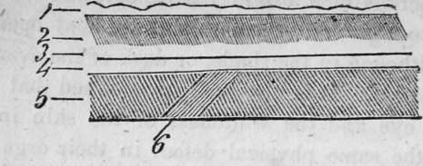
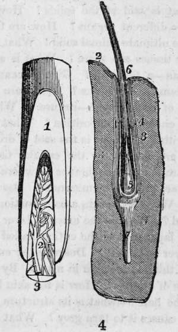

Structure Of The Human Body. Part 4
Description
This section is from the book "Human Physiology For The Use Of Elementary Schools", by Charles Alfred Lee. Also available from Amazon: Human Physiology, for the Use of Elementary Schools.
Structure Of The Human Body. Part 4
25. The Cutis vera, or true shin, is the innermost of the four layers above mentioned. It is a firm stratum of dense fibres intersecting each other in every direction, and having holes for the passage of vessels and nerves.
26. The true skin is composed chiefly of gelatine, and hence is used for the manufacture of glue. Gelatine combined with tannin, which is a proximate vegetable principle obtained from oak and other barks, forms a compound that is insoluble in water; and it is to this circumstance that leather owes the properties it possesses. Leather, then, may be considered as the product of the union of tannin and gelatine.
27. Though the skin consists of four distinct strata, yet it is only from one sixth to one fourth of an inch in diameter. The true skin is united to the structure below by cellular membrane, and this, with the layers above described, constitute the common integument. The following sketch represents the .
1. Cuticle.
2. Rete mucosum.
3. Corpus papillare.
4. Cutis vera,
5. Cellular membrane.
6. Paniculus camosus.
There are in certain parts of the body, and especially in animals, muscular fibres passing up through the cellular membrane, and inserted obliquely into the cutis vera, as at 6 in the plate. These form the muscular web, or paniculus camosus. It is this which raises the feathers in birds and which in the hedgehog and porcupine rolls up the body, and erects the spines ; and by means of this, animals shake off flies from their skin.
28. The skin is defended from the action of moisture, and is also kept soft and pliant by an oily fluid, which is separated from the blood by numerous sebaceous follicles. We find these the most numerous where there are folds of the skin, or hairs, or where the surface is exposed to friction. We sometimes see the oily matter secreted by these glands assume a dark appearance, in the form of black specks, scattered over the face, which are called by many worms, because when pressed out they assume that aspect.
29. The hair is usually treated of by physiologists as an appendage to the skin. The hair takes its origin from the cellular membrane in the form of bulbs, each bulb consisting of two parts; an outer, which is vascular, and from which the hair obtains its nourishment; an inner, which is membraneous, and which forms a sheath or tube to the hair during its passage through the skin. The external covering of each hair is of a horny structure, while the central part is soft and pulpy, and is called medulla, or pith. The colour of the hair varies in different individuals, and is generally supposed to depend on the fluids contained in the pith. The hair, it is said, has been known in several instances to have changed from black to grey in the course of a single night, from the effects of grief, fear, or some other great mental agitation. Vauquelin supposes that as the colouring matter of the hair is destroyed by acids, this phenomenon is owing to the production of some acid in the system. Others suppose that the effect depends upon the sudden stagnation of the vessels which secrete the colouring matter, while the absorbents continue to act and remove that which already exists. There are probably two causes which act in changing the hair to grey ; the first is a defective secretion of a colouring fluid, and the second, the canals which convey the fluid into the hair become obliterated. In the first case, the hair will remain ; in the last, it inevitably dies and drops out.
30. The figure on the last page represents the pulp of a hair injected ; 1, cut surface of hair ; 2, the pulp ; 3, injected vessel ramifying in it. The figure on the right shows the hair in its fallicle, though the drawing was made from the whisker of a Walrus ; 2, the cutis; 3, external sheath of the fallicle ; 4, internal sheath continuous with the cuticle ; 5, pulp ; 6. shaft of hair; 7, large nerve going to it.
31. The nails are also an appendage to the skin. Their chief use seems to be to support the pulp of the finger while it is exercising touch. Animals are provided with structures analogous in their physical and vital properties, such as horns, beaks, hoofs, nails, spurs, scales, etc. Some physiologists consider the teeth as belonging to the same class. The various and peculiar functions of the skin, so important to be understood in order to the preservation of the health, will be fully described hereafter.
Questions
Of what is the human body composed ? What is said of the identity of solids and fluids ? What proportion do the fluids bear to the solids ? How modified by age ? What purposes do the fluids serve ? What is said of the solids ? How are their particles arranged to form the different organs 7 How are the areolae formed ? Of what shape is the ultimate animal solid ? What is a primary tissue ? How many primary tissues are there ? What is a filament ?-a fibre -a tissue-an organ-a function ? Give an example ? What is an apparatus ?-a system ?-membrane ? What are its uses ? What is the simplest form of membrane ?-its use ? What property does it possess ? What its chemical composition ? What remarkable circumstance connected with it ? What is the seat of dropsy ? What varieties of membrane are formed by the cellular tissue ? Describe the adipose ? What are serous membranes ?-where found ?-their use ? structure ? What are mucous membranes ? Describe their structure, situation, use, etc. What is the skin a continuation of ? Of how many parts is it composed ? What is the external layer called ?-what is its use ? What is the layer next to the cuticle called ? Of what is it the seat ?-the next layer ?-its use ? Describe the cutis vera ? What is it used for ? How thick is the skin in man ? By what contrivance is the skin susceptible of motion ? How is the skin kept soft and pliant ? What is said of the hair ?-what is its structure ?-what is its colour owing to ? What causes it to turn grey ? What is said of the nails ?
Continue to:
- prev: Structure Of The Human Body. Part 3
- Table of Contents
- next: Chapter IV. Structure Of The Human Body Continued
Tags
humans, anatomy, skeleton, bones, physiology, organs, nerves, brain